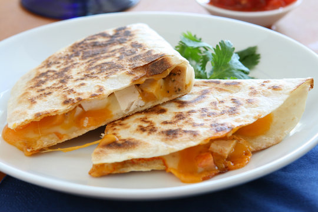

QUESADILLAS

Home made quesadillas for breakfast, lunch or dinner
INGREDIENTS: Serves 2 quesadillas
- 2 flour or corn tortillas (Home made are always best!)
- 100gr of any melting cheese of your choice
- 50gr of ham or chicken
- Salsa!
- Warm up the pan
- Place the tortillas on the pan
- As soon as they warm up, turn them and add the ham
- Right after the ham, add the cheese
- Close the tortilla in half
- Wait for the cheese to melt
You can turn the quesadilla as soon as you feel its getting crispy on each side
ENJOY!!